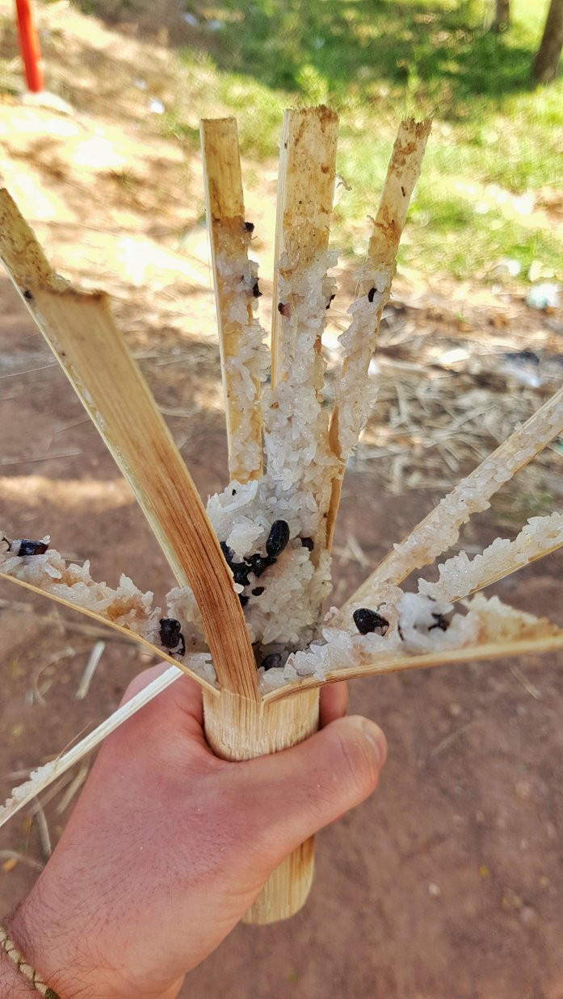
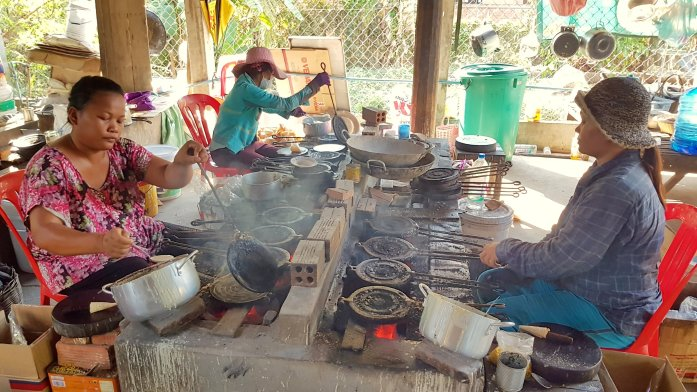
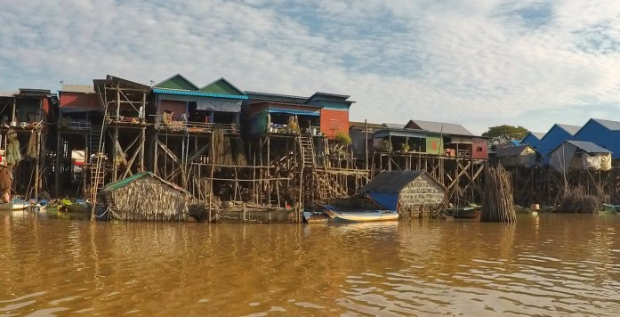
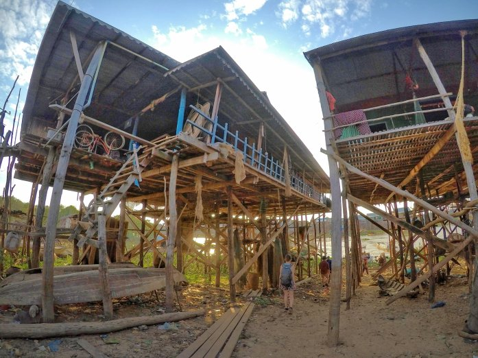
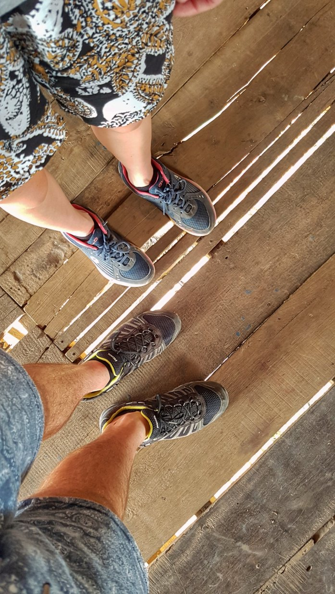
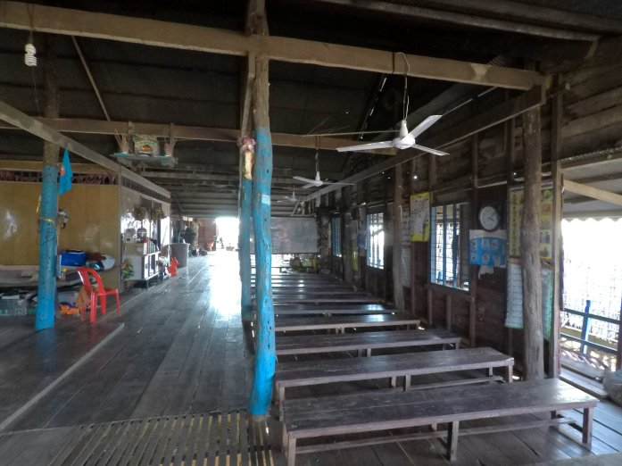
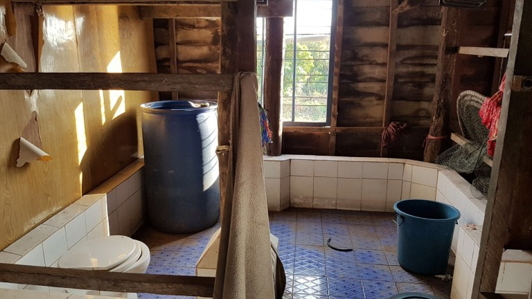
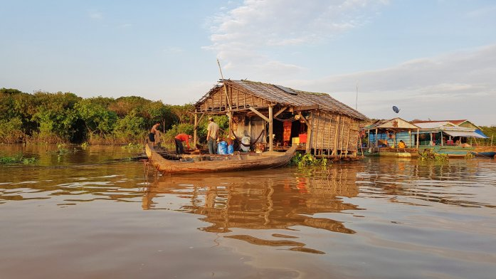
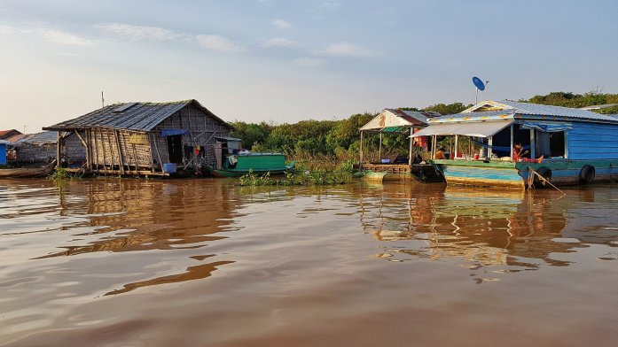
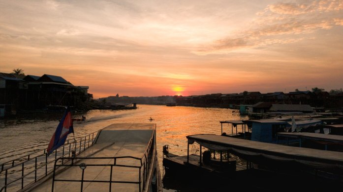

Quello che sarebbe dovuto essere il nostro ultimo giorno a Siem Reap siamo andati a visitare i “villaggi galleggianti” consigliatoci dall’Yvonne che ci era stata qualche settimana prima. Nelle vicinanze di Siem Reap ce ne sono 3: noi abbiamo scelto il più lontano, il Kompong Khleang Village, poichè reputato essere il meno turistico e dunque il più autentico. Abbiamo prenotato il tour con una bravissima guida locale che lavora per un’organizzazione non governativa, un ragazzo sorridente e competente (sta attualmente studiando Business&Management presso l’Università locale) che è nato e per un po’ di anni ha vissuto proprio in questo villaggio: “ho avuto la grande possibilità, grazie a mia madre che ha risparmiato soldi, di potermi trasferire in città e condurre una vita normale frequentando le scuole“.
Inaspettatamente è stata forse l’esperienza più bella e toccante vissuta fin’ora!
Durante il viaggio ci siamo fermati un paio di volte: la prima per assaggiare il tradizionale sticky rice cotto sul fuoco per 8 ore all’interno di una canna di bamboo (usano le canne di bamboo per fare tutto!), spiegandoci come fare per aprirla..
La seconda fermata invece l’abbiamo fatta presso quello che appariva come un semplice negozio di strada preposto alla vendita di dolci tradizionali (donuts cambogiani, banane essiccate, cannoncini vuoti, etc.), rivelatosi poi essere una vera e propria fabbrica artigianale. Incredibile l’esposizione all’alto calore e la velocità di lavorazione in perfetto stile di catena di montaggio fordiana..
Sul retro della costruzione è stata allestita una zona adibita a scuola, con tanto di lavagna piena di equazioni. Nonostante le difficoltà economiche evidenti del paese, sembra che l’istruzione, per quanto possibile, sia comunque considerata importante (ce ne siamo accorti anche in altre occasioni)
Siamo infine arrivati in questo universo a sè stante, isolato e difficilmente descrivibile: povertà dilagante oltre ogni limite, bambini nudi stesi su ammassi di rifiuti (anche se sorridenti e felici, perché ancora inconsapevoli della dura vita che li avrebbe attesi), adulti con volti assenti/apatici/tristi/addolorati seduti per terra a fissare lo stesso punto per tutta la giornata, palafitte di bamboo rialzate per evitare l’inondazione durante la stagione delle piogge (il livello del lago si innalza di 10-15 m), elettricità presente solo da qualche anno (prima usavano batterie di automobili o lampade ad olio), assenza di acqua corrente e potabile (tranne che per alcune catapecchie, talmente povere da non potersi permettere l’acqua in bottiglia, nelle quali è stato installato un filtro grazie all’aiuto dell’ONG con la quale abbiamo visitato il sito).
 Siamo anche entrati nella scuola primaria del villaggio che accoglie gratuitamente i bambini di età inferiore ai 10 anni, per prepararli alle scuole statali obbligatorie. Il “pavimento” era fatiscente (sembrava potesse cedere da un momento all’altro), c’era qualche panchina adibita a banchi, un cartellone con raffigurato l’alfabeto e poco altro. Il gabinetto consisteva in una tazza all’aperto vicino alla lavagna il cui scarico si riversava sul terreno sotto la palafitta (immagino che non fosse una zona molto affollata)
  L’espressione stampata sul volto degli abitanti del villaggio è stata però l’emozione più intensa… ci ha lasciato un vuoto nel cuore, insieme a tanti pensieri. Persone prive di qualsiasi risorsa materiale indispensabile (acqua, cibo, vestiti, casa, etc.) così come di una solida struttura sociale (giustizia, sanità, lavoro, etc.) – cose che noi diamo per scontato – vivono in molte parti del mondo e affrontano quotidianamente problemi vitali. Sono realtà di cui ovviamente siamo tutti a conoscenza ma vederle con i propri occhi è sicuramente di grande impatto emotivo e non lascia indifferenti.
A qualche chilometro di distanza in barca verso il lago Tonlé Sap abbiamo poi potuto vedere le vere e proprie case galleggianti. A differenza delle strutture precedenti, queste case non sono fissate al terreno; questo permette alle famiglie di spostare l’abitazione da una zona all’altra del lago durante il cambio di stagione tramite un motorino simile a quello delle barche.
  Ps. A chiunque voglia visitare questo villaggio, consigliamo di farlo tramite Community First, la quale devolve il 45% del ricavato al villaggio stesso.
Comment Section